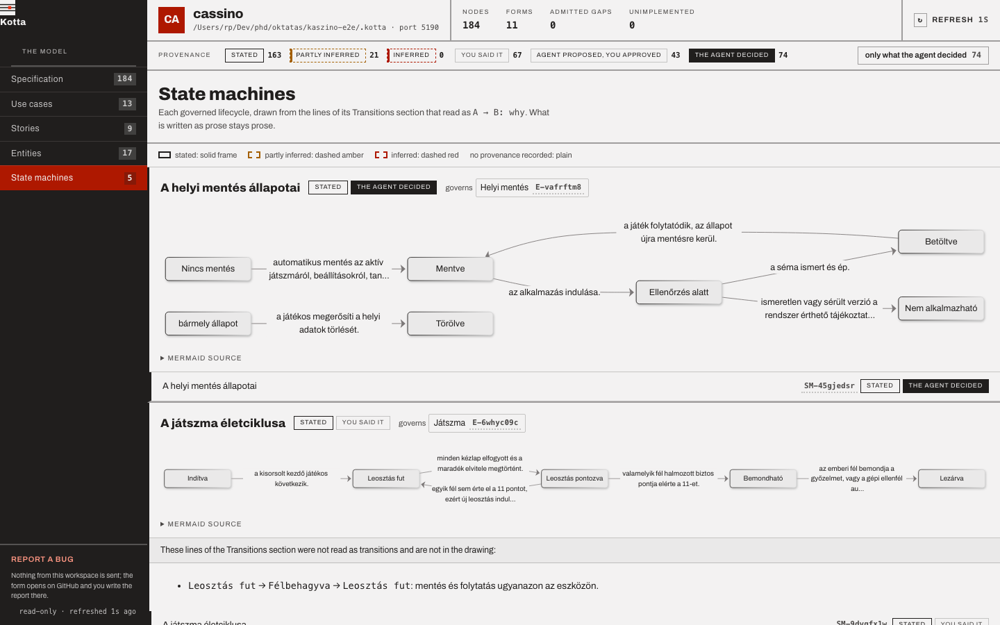
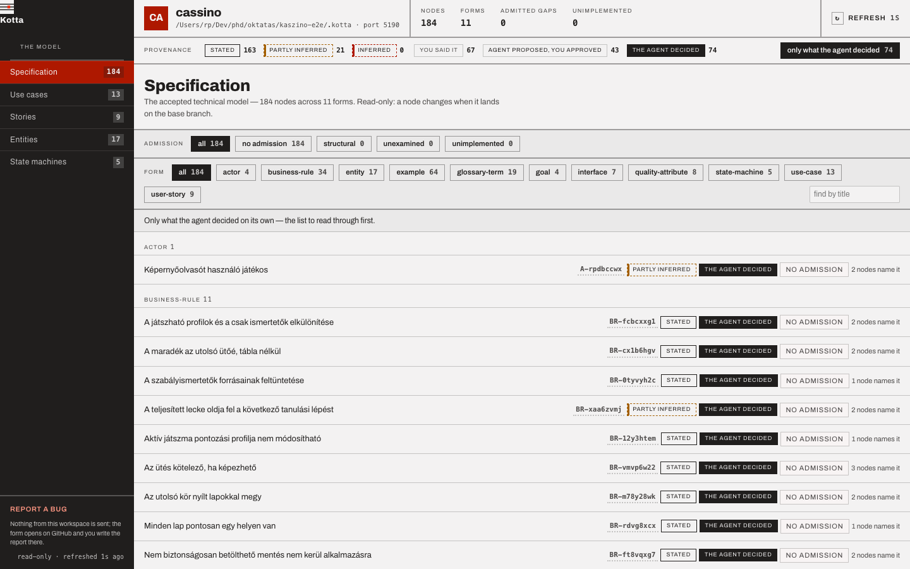

Nobody reads the long spec. So the agent decides. Kotta shows you what it decided.
OpenSpec already writes the change in prose. Kotta adds what prose cannot give you: a technical spec in short, checkable parts, and the diagrams drawn from it. Every decision the agent made on its own is marked, and the conversation it came from is kept beside the change.
A spec nobody reads is a spec the agent decides.
Agents write specs faster than anyone can read them. A thousand lines of requirements get a skim and a yes — and every gap the agent filled in on the way is a product decision nobody saw.
What Kotta adds to OpenSpec.
OpenSpec is where a change is proposed and argued. Kotta adds the four things that let a human check what was agreed without reading all of it.
-
A technical spec
Rules, examples, entities, state machines, use cases, stories and interfaces — each one a short Markdown file in the shape its form declares, checked by
kotta validate. Every missing part is named as the form’s own question. -
Diagrams
The state machines, the use cases, the story map and the entities are drawn from those files by
kotta ui. A lifecycle is read in a glance, not in forty paragraphs. -
The machine’s decisions, marked
Every node says whether it was stated or inferred, and who decided it: you, the agent with your yes, or the agent alone. The last kind is one filter away — the list to read before you approve.
-
The conversation, kept
kotta narrativedistils the agent session into the change’sconversation.md: your intent, the proposals you said yes to, the paths you turned down. Secrets and personal data are filtered first; nodes cite the exchange they came from.

On top of OpenSpec. Compatible with it.
Keep writing changes the way you do. Kotta works in the same directories, adds its files beside yours, and writes specs OpenSpec’s own strict validation accepts — or leaves them to you.
| Where | OpenSpec | Kotta on top |
|---|---|---|
| A change | openspec/changes/<name>/proposal.md, written the way you already write it | model/, conversation.md, planning.md and approval.yaml beside it |
| The accepted state | openspec/specs/<capability>/spec.md | generated from the model, every requirement bound to its node, passing openspec validate --specs --strict |
| Writing specs yourself | the default | narrative: authored: Kotta writes none of it and reports where a requirement disagrees with its node |
| An existing repository | your requirements, scenarios and purposes | kotta import openspec drafts them as rules, examples and goals, all marked as the agent’s until you say yes |
| Landing a change | openspec archive | kotta archive in its place: merges the model, regenerates the specs, moves the change to openspec/changes/archive/ |
OpenSpec’s strict check wants SHALL or MUST in every obligation, a scenario for every requirement and a real Purpose. Kotta enforces the keyword on a change and warns about the other two before OpenSpec does; the generator invents none of them.
One change, one human yes.
The narrative proposes, the model is measured, the human decides once, and the rest is mechanical. Nothing asks again after the gate.
- 01
Propose
Argue the change in prose, then translate it into model nodes, each with its provenance.
/plan-change - 02
Plan
Measure the delta against the accepted model: conflicts, open questions, drift, what the machine decided.
kotta plan <change> - 03
Approve
The one human gate. You say yes in the chat; Kotta records the receipt.
kotta approve <change> --by you - 04
Archive
The model is merged, the narrative is regenerated from it, and any drift is reported.
kotta archive <change>
openspec/changes/what is proposed
→
.kotta/spec/what was accepted
→
kotta gapwhat the code keeps
See what the machine decided.
kotta ui draws the model as diagrams and marks every node with where it came from. One filter leaves only what the agent decided on its own: the list to read before you say yes, instead of the whole spec. Open a node and the exchange in the conversation it came from is shown in place.
Kotta, or OpenSpec alone?
OpenSpec alone is enough for a small change you make on your own, when the requirements and scenarios say everything the code needs.
Add Kotta when rules, states and interfaces must survive many changes, when an agent fills in gaps and you need to see what it decided, or when modules and repositories rely on one another’s promises.

Three ways in.
The narrative says what a change is for. The model says precisely what was accepted. The code keeps it and says so. Wherever you start, you arrive at the same model.
-
A new product
OpenSpec change → /plan-change → modelWrite the change in prose, the way you already do. The planning skill translates it into model nodes, marks where each one came from, and asks for what nobody said instead of inventing it.
-
An OpenSpec repository
kotta import openspec → kotta planThe requirements, scenarios and purposes you already have become a first model, every node marked as the machine’s draft. The planning report lists what the prose never said.
-
A Kotta 0.x workspace
kotta migrate --dry-run → kotta migrateThe specification stays byte for byte as it is. The old process state moves into a read-only archive, and no identifier is lost on the way.
Install it. Plan one real change.
Kotta runs inside the repository you already have. Node.js 20+ and Git are the only runtime requirements. This is a pre-release, published under the next tag.
- No service to deploy
- No database to maintain
- No account to create
- No hidden state to trust
# Install the CLI
npm install --global @arpadtamasi/kotta@1.0.0-alpha.1
# Inside an existing Git repository:
# the form registry, the skills and the rules your agents read
kotta init
# From the chat: translate an OpenSpec change into the model
/plan-change
# Then measure it, say yes, and land it
kotta plan <change>
kotta approve <change> --by you
kotta archive <change>